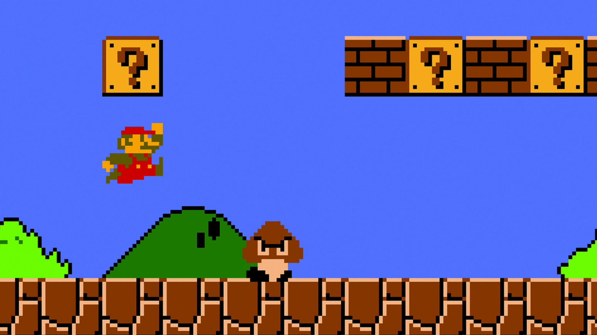
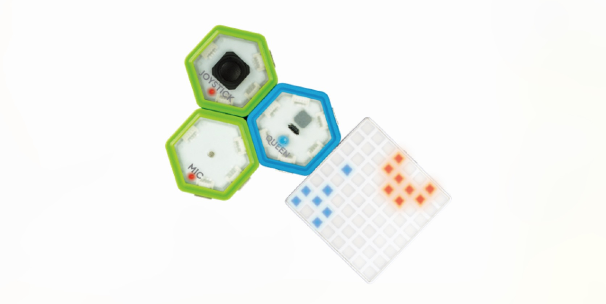

Creating Sprite Run Game!¶
Have you ever played Super Mario Run?

Well, it’s actually easy to build a game that is just like Super Mario Run! Let’s use our Light Game Kit to create a fun game called Sprite Run!
1. Getting Started!¶
Before we get started on coding, it is important to make sure that we have everything connected.
Step 1¶
Make sure you have downloaded our software and driver on your computer. If you haven’t, you can download them here: JUKU Download
After you have successfully downlaoded JUKU app on your computer, it’s time to assemble the kit!
Step 2¶
Plug the USB cord into QUEEN module , and connect it to your computer.
 //TODO: change picture
Step 3¶
Connect the light board to the right of the QUEEN module, as shown below.
//TODO: change picture
Step 4¶
Conenct the joystick to the left of the QUEEN module, as shown below. //TODO: change picture
Now that we have assembled our kit, let’s get to making the game!¶
2. Fun Code!¶
Build the user Interface¶
Step 1: Create our Sprite¶
Our sprite will be jumping up and down, and it doesn’t have a body yet, so we need to draw its body on the board.
TODO: insert image here
Step 2: Create the Roads¶
We also need something that our sprite will jump on, otherwise it will float in the air!
TODO: insert image here
Step 3: Create the setup of the game¶
At the beginning of the game, we want to set the score to 0, otherwise it wouldn’t be fair! We also want to put our sprite and the roads to a certain position, so that they will not be running around!
TODO: insert image here
Step 4: Setting up the game¶
Now that we have created the setup of the game, we will put the function we created in step 3 in the Queen Setup. This way, we are telling the Queen to do what we want the game to do!
TODO: insert image here
Step 5: Sprite Run cover image¶
Remember when you open an app on your phone, you click on its cover image icon? We are creatin gour own cover image here!
TODO: insert image here
Set the Controls¶
Step 1: Creating SpriteFly¶
We want to control the sprite to jump up, so let’s create a function that tells the sprite to jump. We name the function SpriteFly.
TODO: insert image here
Step 2: When can sprite jump?¶
In our life experience, can we jump mid-air? No! So it only makes sense that the sprite can jump only when it is standing on the road. We also want the sprite to jump only when we want it to, so we use an if-statement, telling the sprite that it can only jump when it is standing on the road and when we are telling it to jump.
TODO: insert image here
Step 3: Jump!¶
When sprite jump, it moves up. We can do this by simply changing it’s y-coordinates on the light board up!
TODO: insert image here
Step 4: Telling the Queen¶
As we did with the setup of the game, we need to tell the Queen what we want it to do. Therefore, we move the function block to Queen loop.
TODO: insert image here
Step 5: Falling down…¶
After the sprite jumps, it needs to come down to the road, becuase it can’t stay up forever!
TODO: insert image here
Step 6: Game over?¶
When the sprite has fallen down, we need to see if it lands on ground or falls between the crack. If it lands in crack, then Game Over!
TODO: insert image here
Step 7: Setting intervals¶
In our program, we don’t know when someone will move the joystick and tell the sprite to jump. Therefore, we need to check constantly if the sprite has jumped up and needs to fall down.
TODO: insert image here
Writing Rules for Sprite Run¶
Step 1: Shifting the roads¶
Since we only allow the sprite to jump up and down, the road underneath it needs to shift. Here, we shift the road to the left so that we can see the cracks coming!
TODO: insert image here
Step 2: Generating new roads¶
After the one road disappears, another road should appear and take it’s place. Otherwise, no matter how far our sprite can jump, it has nothing to land on!
TODO: insert image here
Step 3: Setting intervals¶
Same with spriteFall, we don’t know when the roads run out, and we need to shift the roads constantly, so we need to constantly move the road and generate new roads.
TODO: insert image here
Scoring System¶
Step 1: Increase the scores!¶
Whenever the sprite jumps over a crack, the score should increases by 1. Here, we’ve helped you and calculated the conditions under which the sprite jumps over a crack succesfully!
TODO: insert image here
Step 2: Setting intervals¶
You should have guessed by now, we need to check constnatly if the sprite has jumped over the crack succesfully and update the score if necessary.
TODO: insert image here